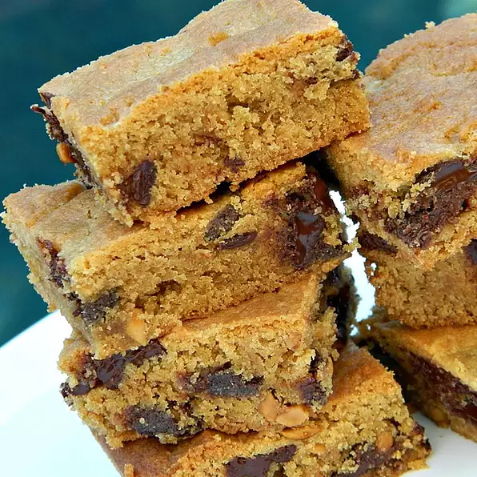

Peanut Butter Chunk Bar

An amazing treat that will satisfy any craving for peanut butter and chocolate.
Ingredients
- 3/4 cup of butter, softened
- 1/2 cup of white sugar
- 1/2 cup of firmly packed brown sugar
- 1 egg
- 1 tsp of vanilla extract, or more to taste
- 1 cup of peanut butter
- 1 3/4 of unbleached flour
- 3/4 tsp baking soda
- 10oz chocolate chunks
Directions
- Preheat oven to 375 degrees F (190 degrees C).
- Beat butter, white sugar, and brown sugar together
with an electric mixer in a large bowl until light and fluffy. Beat egg
and vanilla extract into the butter mixture. Add peanut butter and
beat until incorporated.
- Sift flour and baking soda together in a separate bowl;
mix into the butter mixture. Fold chocolate chunks into the mixture.
- Spread the batter into a 13x9-inch baking dish.
- Bake in the preheated oven until a toothpick inserted into the center comes out clean,
20 to 25 minutes. Cool completely before cutting into squares.